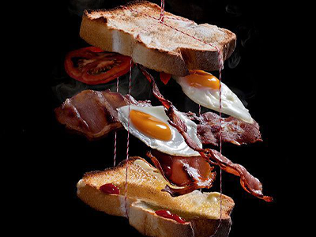

Photograph
of the Day
Established in 2019 in one of Atlanta’s most prestigious neighborhoods, Copper Cove Restaurant and Bistro has quickly became a celebrity favorite for fine dining in a lounge-like atmosphere.
THE STORY
"Every one who’s ever tried feeding a baby knows how important it is to make the food look nice and funny – especially if it’s broccoli or porridge… This is because the looks of your food constitutes a great part of the overall pleasure of eating. But if you manage to turn your noodles into a unique artwork, or can make a plate of Angry bird sandwiches, or even stage an elaborate foodscape hardly anyone could say no to that!"
ABOUT THE ARTIST
"A Rice Kheer recipe that is a keeper and my family's heirloom recipe that you will love for its deliciousness. This traditional Indian rice pudding made with basmati rice, whole milk, sugar, nuts, saffron and cardamom is slow-cooked to perfection making for a rich, creamy kheer. I share our favorite rice kheer recipe that is made easy with my stepwise photos and video."
-Dassana Amit
GET RECIPE